Climbing
Climbing Mount Kilimanjaro is the historical home of the Chagga people, who have lived at its base since the fifteenth century. This ethnic group is renowned for its agricultural prowess, resilience, and entrepreneurial spirit.
Today, the Chagga preserve a rich cultural heritage, including unique rituals, crafts, and distinctive cuisine. Their knowledge of the mountain makes them expert guides and porters for those who come to Tanzania to climb Kilimanjaro.
This article explores the Chagga people's traditions, their adaptation to modern influences, and their key contributions to the local economy and culture.
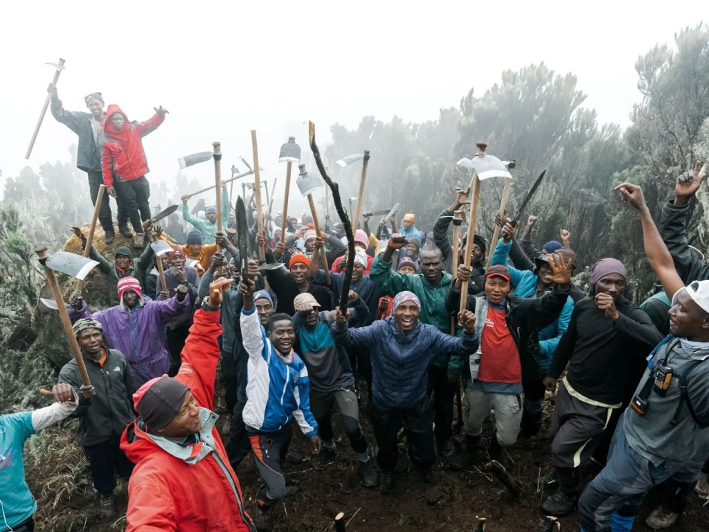
Who are the Chagga?
The Chagga are an ethnic group living in northeastern Tanzania on the southern slopes of Mount Kilimanjaro. Tanzania is home to a rich diversity of cultures, with 132 different ethnic groups in total. The Chagga are the among them.
The Chagga people are known in Tanzania for being business-savvy, hardworking, and among the country's most educated groups. Some of their prosperity is attributed to their early and sustained interactions with Europeans. However, despite these external influences, the Chagga have also retained many of their unique cultural traditions, which they continue to preserve today.
How to properly name the Chagga people?
This group is known by several names (Chaga, Chagga, Jagga, and Wachagga) due to different languages, mainly , and the spoken across Tanzania. Throughout this text, we will use the name "Chagga," but it's important to know that all these terms refer to the same people.
In the nineteenth century, the regions inhabited by the Chagga became known as Chaggaland or the Chagga Kingdoms. While all members of this ethnic group speak the same language, they have various dialects. This diversity, reflected in multiple kingdoms and dialects, suggests that the Chagga have not always been unified.
In the past, different clans often clashed. Evidence of this rivalry still exists today.
Where do the Chagga live?
The Chagga people live on the southern and eastern slopes of Mount Kilimanjaro, extending from Kibongoto to Usseri, as well as in areas to the south and west of the mountain. These regions fall within the Kilimanjaro and Arusha regions of Tanzania.
Traditionally, the Chagga live in villages focusing on agriculture and some livestock farming. Many also reside in urban areas, with the largest Chagga population in Moshi, Kilimanjaro's regional capital. Additionally, they have a significant presence in the nearby town of Arusha.
Traditional Chagga houses
As Africa continues to change, finding traditional Chagga houses and families who still follow their ancestral ways is becoming harder. However, old-style houses can still be found in villages, along with small museums that showcase the traditional lifestyle of the Chagga people. One such place is the Chagga Museum in Marangu, which visitors can explore during their trip to Kilimanjaro.
The traditional Chagga dwelling is a beehive-shaped structure with a single entrance and no windows. It resembles a tent and has no connection between the walls and the roof. Builders typically use dry grass or banana leaves to construct these houses.
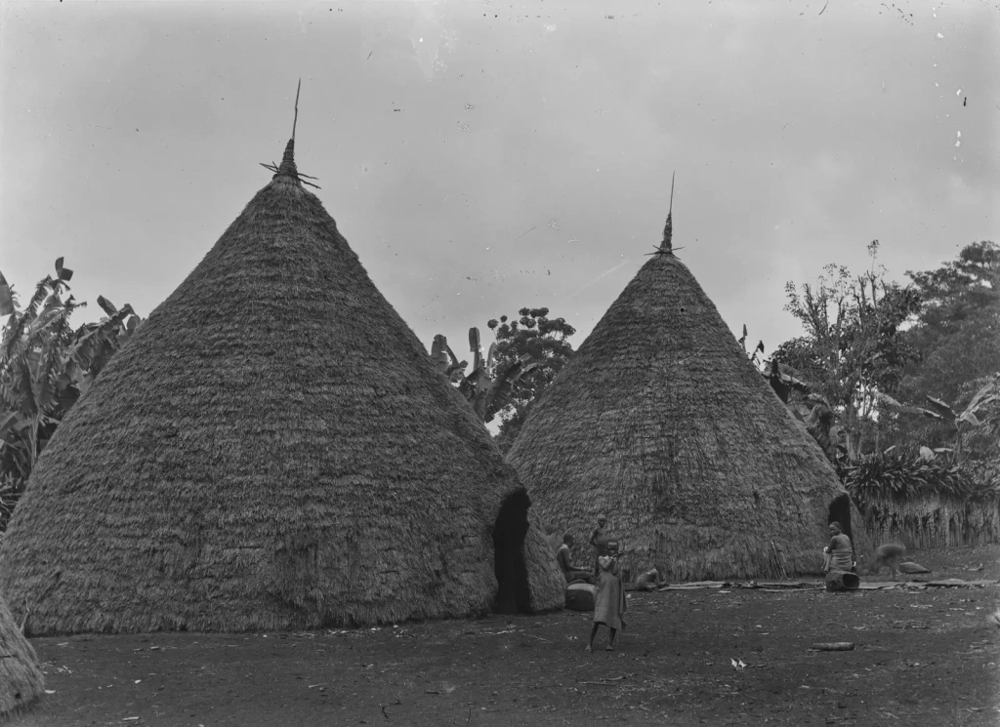
In recent constructions, builders started using branches along with mud or even fresh cow dung. As a result, these houses resemble mud-brick structures. This shift reflects the influence of other Tanzanian cultures, aligning traditional homes more closely with the Swahili architectural style.
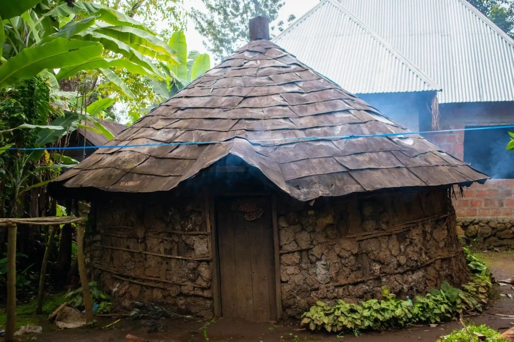
Typically, the entire family and their livestock lived together in the house. The corner designated for the head of the family was the most well-arranged. Women had space near the animals, as they were responsible for caring for them. The houses accommodated goats and cows with calves, which helped keep the hut warm. Children had a separate corner that featured a small gate.
A fire would burn in the center of the hut to provide warmth. The slopes of Kilimanjaro can get quite cold, especially at higher altitudes. During the humid rainy seasons, people relied on various methods to stay warm, including the smoke that filled the indoor space.
Modern houses are constructed from fired clay or cement blocks topped with metal sheet roofs. Nearly every home has electricity, yet many still prefer to cook outdoors over an open fire. The Chagga people also actively use solar panels, as power outages are common in Tanzania.
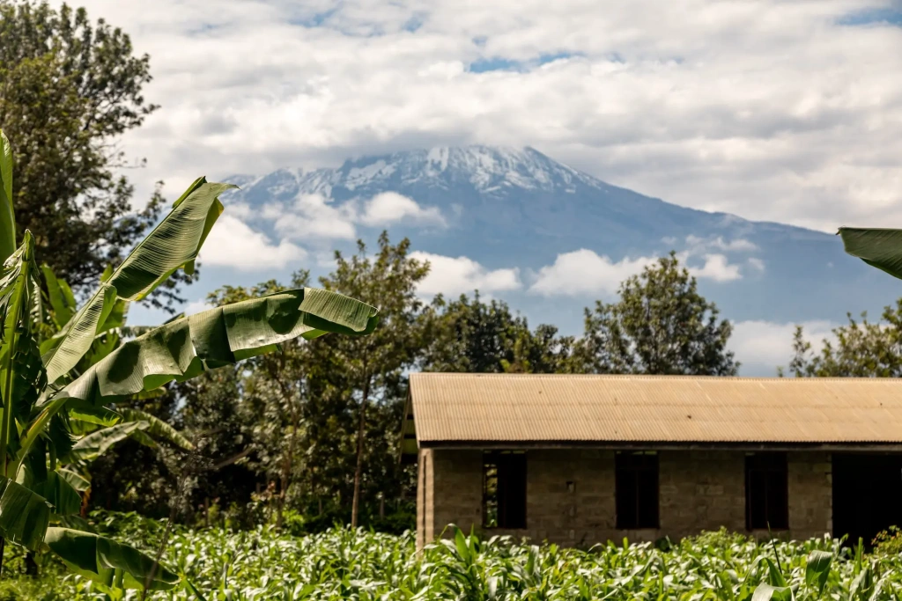
What are the Chagga people known for?
The Chagga are well-known for their strong work ethic and entrepreneurial spirit. In contrast to the slower pace of development in much of Tanzania, the Chagga's proactive approach has given them a distinct advantage.
Bananas, coffee, yams, and millet
Kilimanjaro boasts fertile volcanic soil that enables multiple bountiful harvests each year. The region enjoys abundant sunshine and rainfall, with numerous rivers and streams cascading down the slopes. As early as the fifteenth century, the Chagga produced food there. Over time, they have enhanced the area's natural advantages through their farming expertise.
Each Chagga household typically maintains its own banana coffee garden. Additionally, the Chagga grow vegetables, yams, cassava, and beans in their home gardens, while cultivating millet and corn on larger plantations. Their orchards yield avocados, mangoes, papayas, and jackfruit.
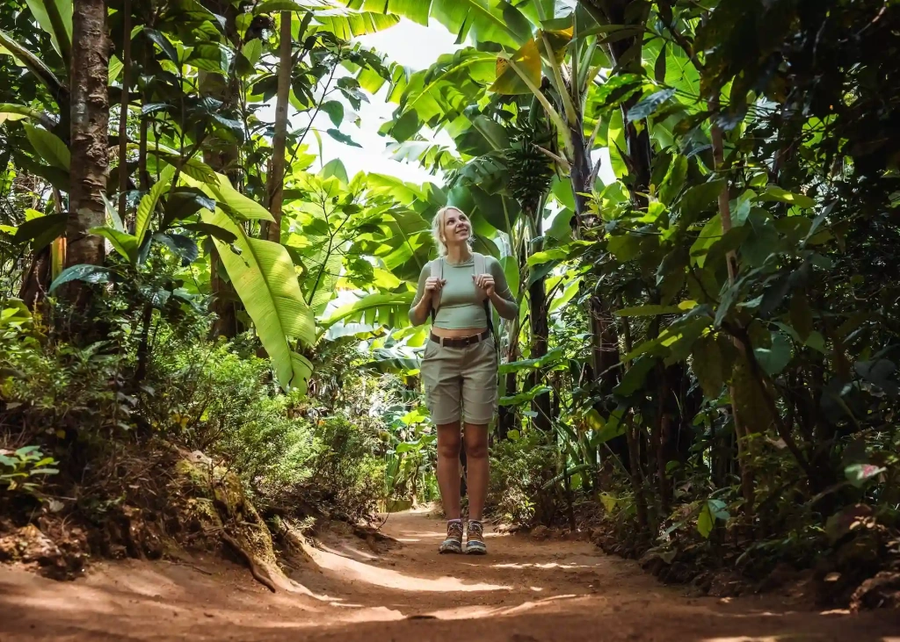
With European influence, Kilimanjaro's coffee production gradually expanded during the first half of the twentieth century. Today, it is renowned as a major cash crop for both the Chagga people and the Kilimanjaro region. Tanzanian coffee is famous for its unique fruity flavor, with connoisseurs especially appreciating Tanzanian .
Labor in Chagga economic activities is traditionally divided by gender, and this practice typically continues today. Men are responsible for digging and maintaining irrigation channels, preparing fields, herding livestock for grazing, building houses, and feeding and slaughtering animals. Meanwhile, women handle tasks such as collecting firewood, fetching water, cleaning the home and garden, caring for children, doing laundry, working in the fields, preparing meals for family members and animals, and trading vegetables and fruits.
Cows and goats
Although the Chagga people raise livestock, it is not their main occupation. The terrain around Kilimanjaro limits the space available for grazing. Nevertheless, many Chagga families still keep cows and goats.
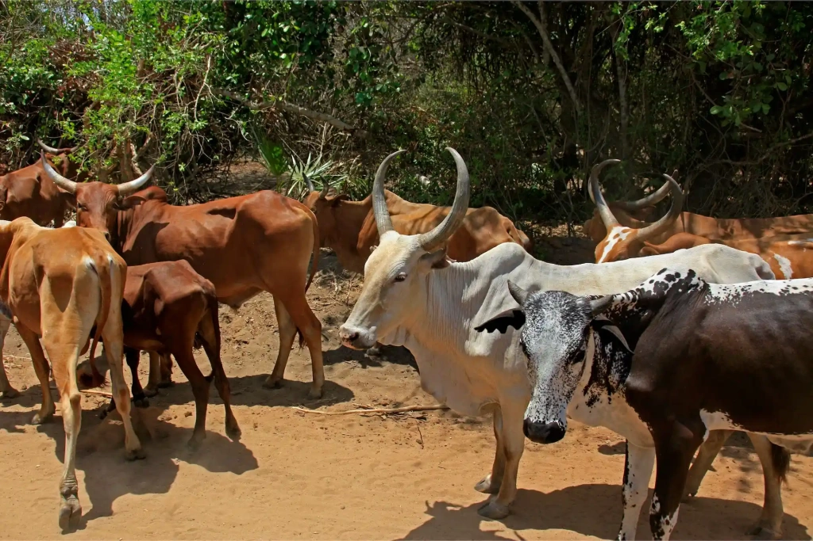
Most cows in the region are Zebu, recognizable by their distinctive humps and Indian ancestry. Goats are raised not only for milk but also play a key role in Chagga rituals. They are often slaughtered for important family and clan events, and for wedding feasts, they are traditionally roasted whole on a spit.
Trading
The Chagga people are also recognized for their dedication to education. The residents of Kilimanjaro have benefitted from the interest that Africa's highest mountain has drawn from European explorers. Various Chagga chiefdoms welcomed missionaries like Richard Reusch, a German preacher and mountaineer famous for his multiple ascents of Kilimanjaro and for discovering a leopard frozen in the snow.
To convert Africans to Christianity, Europeans first had to teach them how to read. The most successful missions invested in education by establishing parish schools. Missionaries like Richard Reusch helped establish mass education in present-day Tanzania.
Over time, many Chagga youth received formal education and successfully applied it to practical activities, including trade. Notably, the first African coffee cooperative emerged on Kilimanjaro: the Kilimanjaro Native Cooperative Union ().
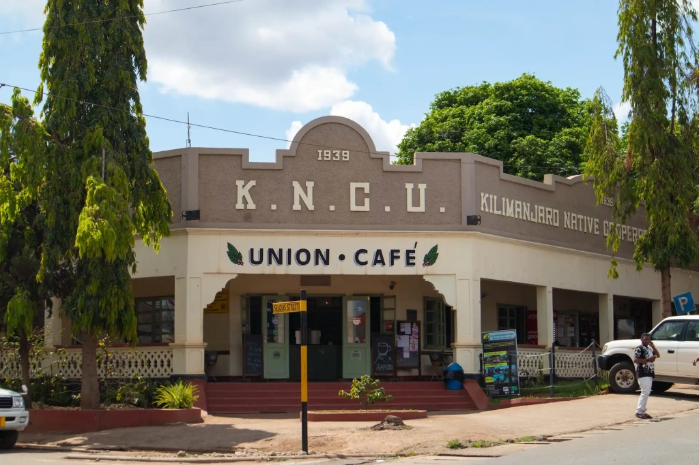
Another benefit of the early interactions between the Chagga and Europeans is the spread of the English language. Fluency in English opens job opportunities in the tourism sector.
Many Chagga individuals receive a good education and are skilled in negotiation, organizing small businesses, and engaging in politics. Some relocate to Dar es Salaam or other countries to further develop their skills and advance their careers.
Chagga culture
The culture of African peoples includes rituals, clothing and adornments, music, traditions, crafts, and, of course, traditional food and culinary practices. Let's briefly explore each of these aspects.
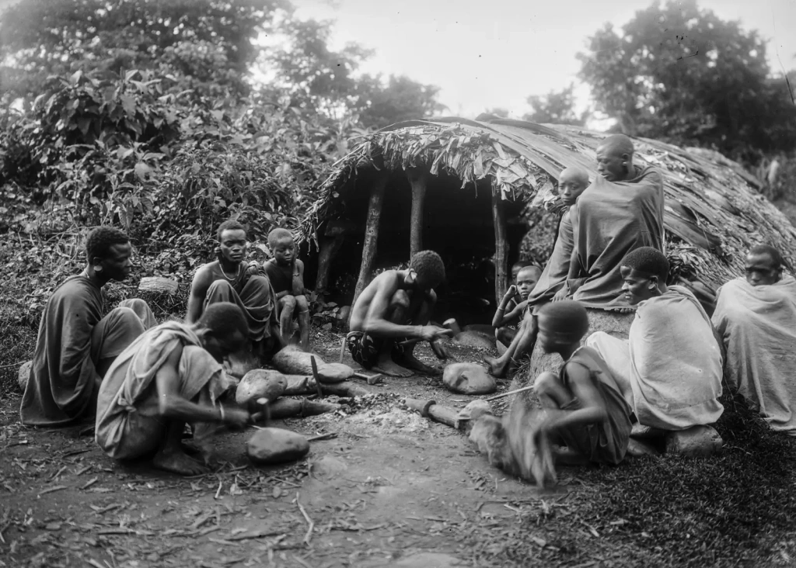
What language do the Chagga speak?
Language forms the foundation of any national culture. All Chagga people share the Kichagga language, although it's more accurate to refer to it as a collection of dialects. Despite the various dialects spoken across villages, all Chagga people can understand one another. This even applies to those who live far from Kilimanjaro, in the Northern Pare Mountains, and speak Gweno.
Kichagga is mainly spoken at home, while Swahili is used in primary schools and workplaces. At the secondary and university levels, lessons are usually conducted in English, making many Chagga proficient in at least three languages. However, not everyone in the villages speaks English fluently.
Beliefs and rituals of the Chagga people
Due to significant European influence in the nineteenth and twentieth centuries, especially in religion, the Chagga gradually lost many of their oral traditions. Today, anthropologists struggle to find individuals on Kilimanjaro who still maintain traditional Chagga beliefs. Most Chagga practice some form of Christianity, while a small minority identify as Muslim.
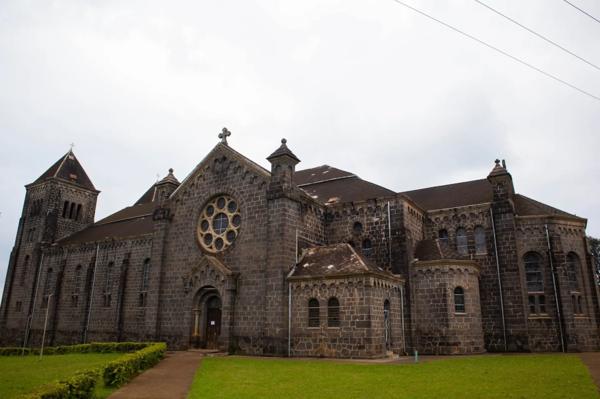
Before the spread of Christianity, Ruwa was the central deity in Chagga mythology, linked to the sun and the creation of the world.
Despite Christianity's influence, many in Chagga society still observe superstitions and practices related to witchcraft. People visit sorcerers for rituals like healing, love charms, exorcisms, and curses.
Herbalism and folk medicine are also widely practiced. Knowledge of medicinal plants has been passed down through generations, and many people still seek the help of traditional healers. They use a variety of herbs, plant roots, tree bark, and other natural materials in their remedies. One particular plant holds great significance and reverence in Chagga culture.
Masale, an evergreen shrub known as Dracaena fragrans, is commonly grown in yards near Chagga homes. This beautiful plant can reach heights of up to 15 meters and symbolizes well-being and prosperity. Families plant masale in their yards to protect against evil spirits. In some cases, uprooted masale bushes are tied to trees in the fields as a ritual to protect the harvest.
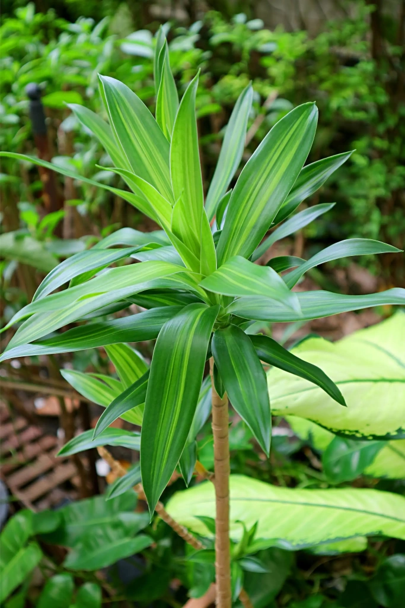
The Chagga society has a unique tradition regarding reconciliation. If neighbors or family members argue, they must make amends quickly. Otherwise, lingering resentment can lead to illness and misfortune. The simplest version of the ritual involves plucking a leaf from the masale plant, folding it into a knot, and presenting it to the person they have wronged. This gesture signifies a request for forgiveness, and refusing it is considered unacceptable.
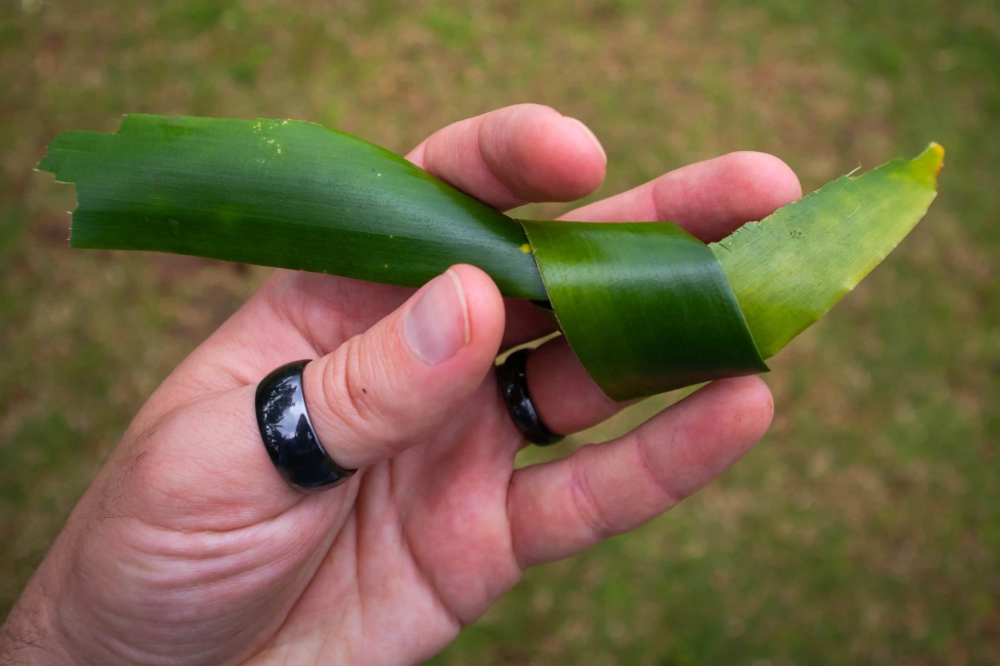
Chagga legends, proverbs, and songs
Chagga legends tell of their migration to Kilimanjaro’s slopes, reflecting the broader across Africa. It is believed that the Chagga settled on the fertile southern slopes of Kilimanjaro during the fifteenth to sixteenth centuries. However, both researchers and the Chagga are uncertain about their origins and ancestors.
Other Chagga legends recount tales of clan wars. By the late nineteenth century, nearly 40 Chagga kingdoms thrived on the slopes of Kilimanjaro, each ruled by its own king, known as a These kingdoms often conducted raids on one another and occasionally defended themselves against invading Maasai and other tribes. To prepare for such attacks, the Chagga dug underground tunnels, some of which still partially exist today. These tunnels served as hideouts where the Chagga could conceal valuable possessions and set ambushes for their enemies.
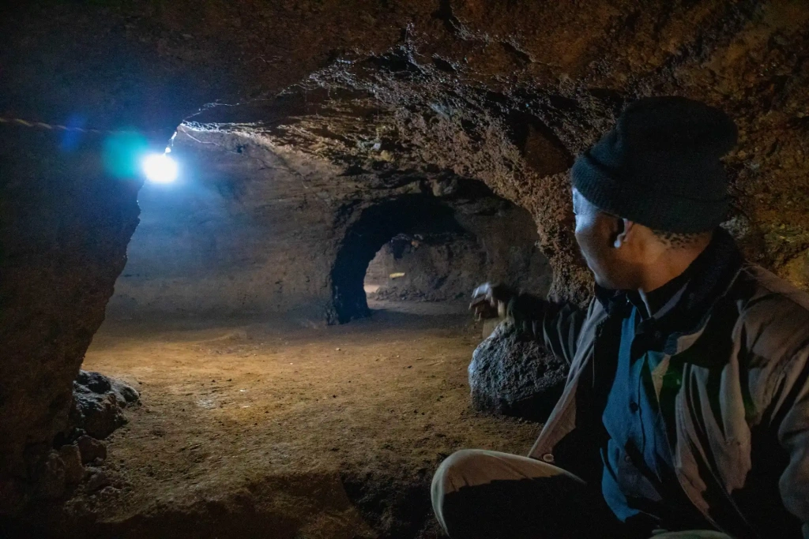
Traditional fables often feature animals like leopards, elephants, and monkeys as metaphors for relationships within the clan. In these fables, animals represent human traits, similar to stories in other cultures. In contrast, myths introduce supernatural beings and ancestral spirits that the Chagga use to explain their origins and connection to Mount Kilimanjaro.
The oral traditions of the Chagga are best preserved in their proverbs, which emphasize the value of community, mutual assistance, and respect for elder wisdom. These sayings reflect the Chagga's respect for the bond between generations. For example, one of the best-known Chagga proverbs emphasizes the significance of continuing the lineage.
"He who leaves a child lives eternally." - Proverb of the Chagga
Another enduring part of Chagga folklore is their songs, which are still performed today, though their original ritual meaning may have lessened. Traditionally, the Chagga sang during important ceremonies and while engaging in communal labor, such as tilling the land or harvesting crops.
Musical instruments of the Chagga
Traditional Chagga musical instruments include bells, wooden flutes, and drums. Music is deeply intertwined with dance, so nearly all instruments can be played while moving. For example, bells are often worn on the ankles, and the drums are designed to be compact, making them easy to hold under the arm or between the legs while dancing.
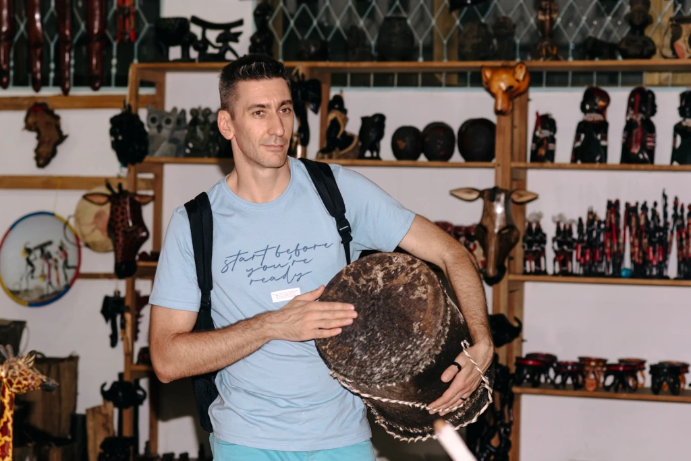
Dances and songs are part of every Chagga celebration. Nowadays, traditional instruments are more commonly used during ceremonies held specifically for guests. You can also find these instruments in souvenir shops.
Traditional Chagga crafts
In addition to musical instruments, the Chagga people create wooden dishes, a variety of bead and leather ornaments, farming tools, and weapons, primarily spears.
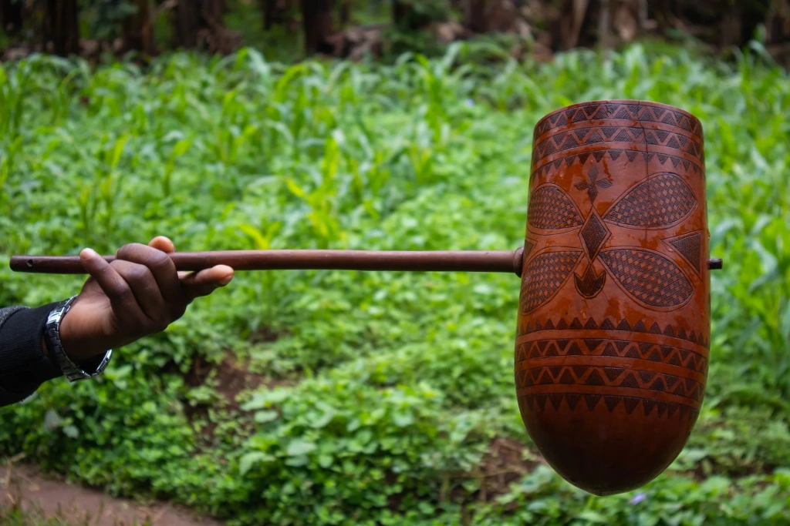
Another craft practiced by the Chagga includes basket weaving and the creation of mats and straw hats. They also sew vibrant clothing and make shoes. Interestingly, tailoring is not seen as exclusively female, and many men are actively involved in this craft.
Chagga clothes and jewelry
Traditionally, cowhide was the most common material for clothing among the Chagga. They also used hides and furs from other animals, as the temperatures near the mountain forest on Kilimanjaro can be quite low, often accompanied by cold rains and mist.
Beaded jewelry and fabric were introduced later, during the Chagga's active contact with the outside world. Today, traditional Chagga clothing for women includes large pieces of colorful fabric. The larger piece is called kitenge, while the smaller one is known as kanga. These fabrics can be tied over a dress under the arms or worn as skirts. They are also used as carriers for small children, who are often carried on the mother's back.
Interestingly, the Chagga now wear a wide range of modern clothing, except for shorts. Only boys wear shorts as part of their school uniform. Everyone else, away from the beaches, opts for more closed attire.
Chagga Cuisine: food and drinks
At its core, Chagga cuisine centers around bananas. The Chagga grow several varieties of bananas, some eaten raw, others boiled, and some fried. One of the most popular dishes is mtori, a hearty stew made with meat and bananas.
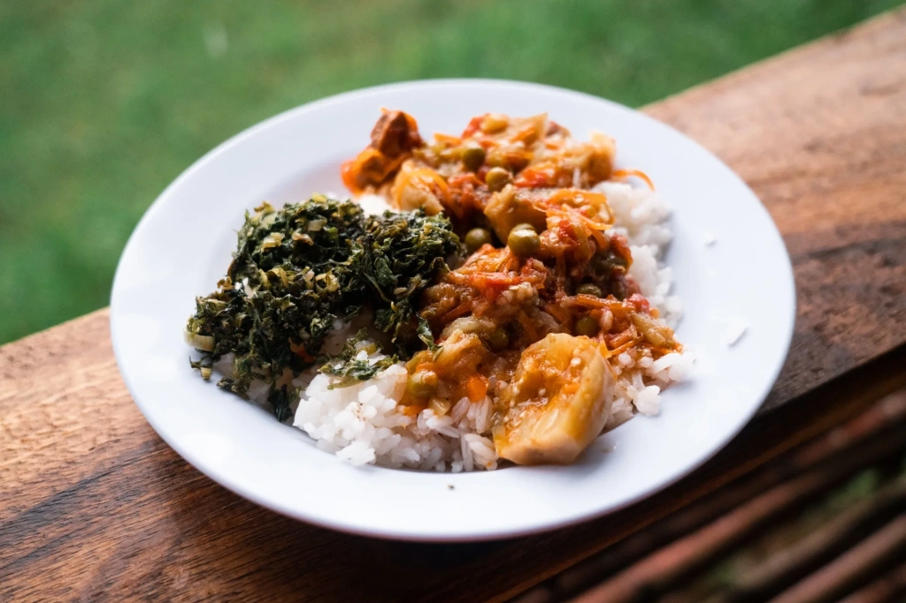
The Chagga diet features a range of foods, including sweet potatoes, rice, beans, cassava, chicken, beef, and goat meat. They also grind corn into flour to make ugali, a simple dish similar to thick porridge typically eaten by hand.
The Chagga's most popular drink is mbege, a homemade beer made from fermented bananas, often enriched with a starter from millet flour. No Chagga marriage ceremony or funerals is complete without mbege.
Visit Tanzania to enjoy the local cuisine, drink Kilimanjaro coffee, take in the breathtaking views of Mount Kilimanjaro, and connect with the indigenous people of this remarkable mountain!
All content on Angelino Adventures is created with expert insights and thorough research, in line with our Editorial Policy.


Want to know more about Tanzania adventures?
Get in touch with our team! We've explored all the top destinations across Tanzania. Our Kilimanjaro-based adventure consultants are ready to share tips and help you plan your unforgettable journey.
 Tanzania Safaris
Tanzania Safaris
 Kilimanjaro and other mountains
Kilimanjaro and other mountains
 About Angelino Adventures
About Angelino Adventures
 About Tanzania
About Tanzania